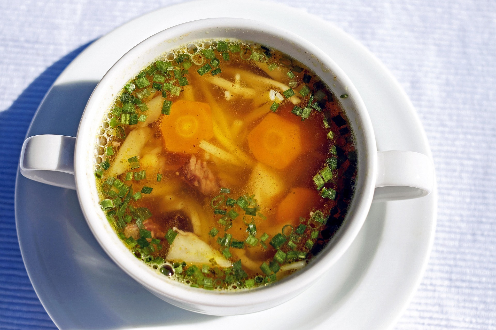

It's Some Soup

Description
This is some soup to warm your insides and stave off the cold.
It is most certainly not "water-based cooking".
Ingredients
- Broth
- Carrots
- Onions
- Fennel
- Potatoes
- Basil (FRESH ONLY)
Steps
- Heat up your broth
- Chop all of your other ingredients
- Put all chopped ingredients in the hot broth
- Cook until the ingredients are soft enough to eat.
- Pour into a bowl and eat.
If any of this is confusing, clearly you do not have the wisdom of Odin and should consider staying out of the kitchen.
Home